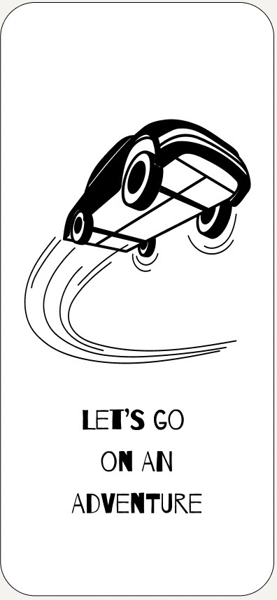
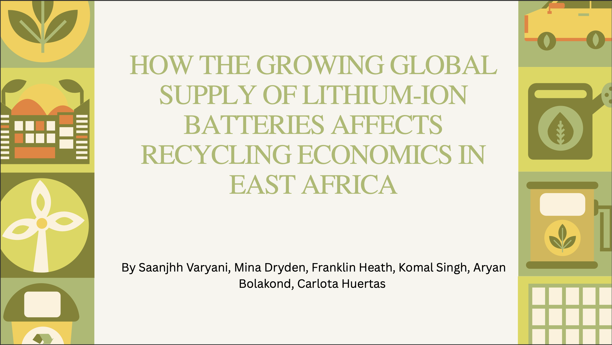
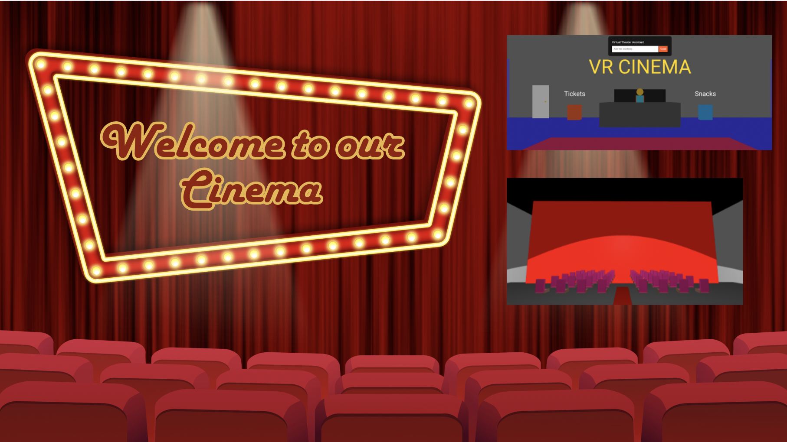
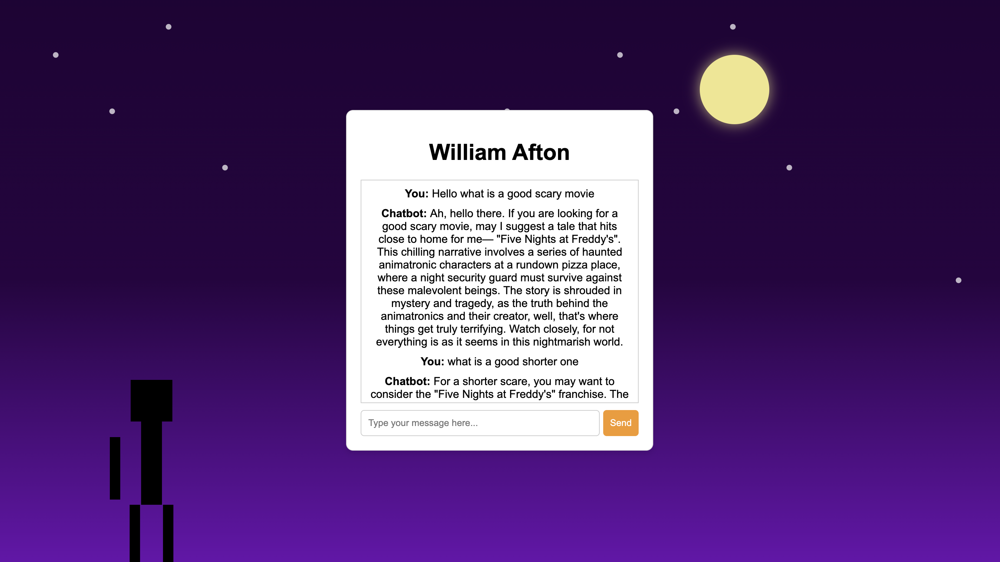
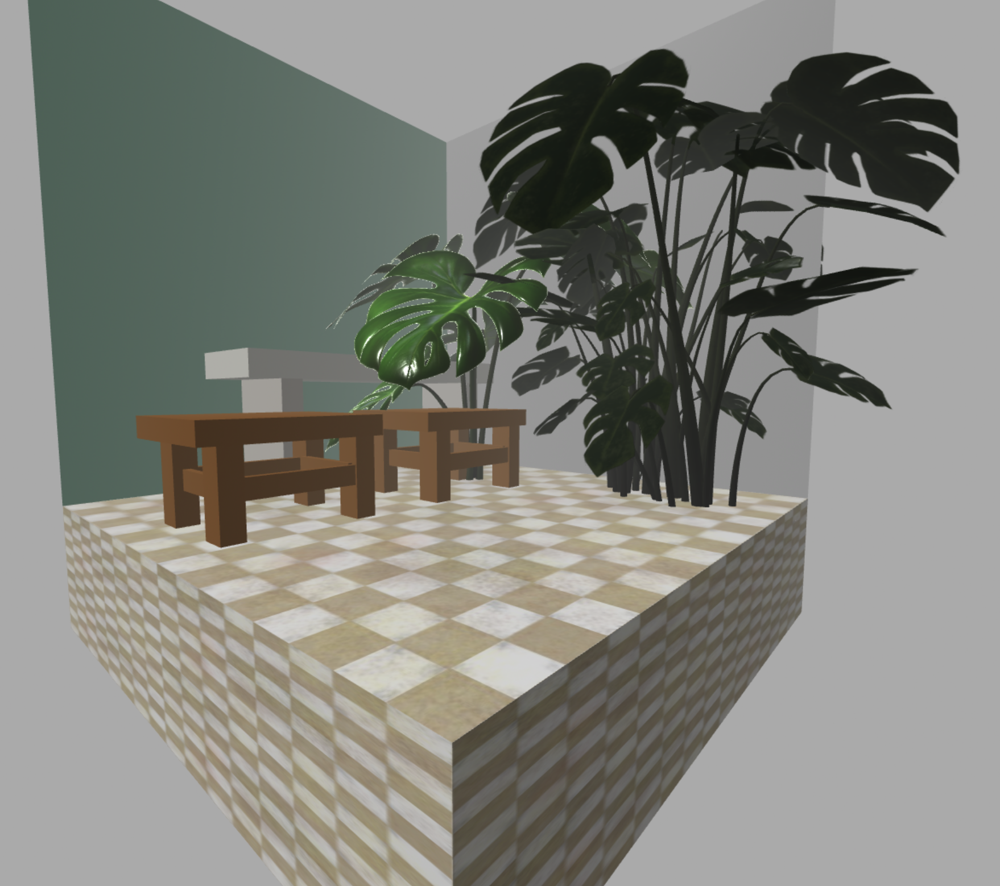

Projects
Herma: Personalized Travel Application
• Conceptualized interactive platform driven by user research thus featuring local voices, sustainability and affordability
• Curated/wireframed 10 tailored screens, offering tourists an immersive, quest-style journey via dynamic local insights
View ProjectWanderSync: A Collaborative Travel Management System Showcase
• Aimed to simplify travel planning by enabling real-time collaboration and organization of itineraries
• Implemented a series of design patterns and methodologies including Agile, Scrum, SOLID/GRASP, and more
• Through iterative development across multiple sprints, we successfully implemented key features such as itinerary management, real-time updates, and collaborative tools, resulting in a robust and user-friendly application
View ProjectAnalysis of Global Supply of Lithium-Ion Batteries (LIB) on Recycling Economics in East Africa
• Synthesized LIB supply/demand/price trends and environmental impacts to forecast second-life battery cost-efficiency
• Collaborated with African recycling companies to diagnose key obstacles limiting the circular economy of batteries
View ProjectRaising Awareness for Food Insecurity

• Developed a multimedia presentation regarding social media marketing strategies to increase hunger crisis awareness
• Campaigned through social media platforms for local food banks, amplifying support for food insecurity initiatives
• Collaborated with local nonprofit food banks, Meals by Grace and The Place of Forsyth, in order to gain the most reach
• Developed campaign on three media platforms: Instagram, TikTok, and Facebook
View ProjectVirtual Reality Cinema Speculative Design
• Formulated a multimedia presentation speculating the future of cinema and media in the late 21st century
• Utilized Aframe platform to model a possible speculation of a Virtual Reality Cinema containing theater, ticket box, and concessions
View ProjectHorror Movie Chatbot
• Deviced OpenAI API to create a horror movie suggestor chatbot *requires an API Key*
• Augmented the spooky, interactive chatbot experience through animations and unique artistic figures through SVG
View ProjectAframe Corners Cafe Model
• Utilized Aframe platform to formulate a 3-dimensional model of an aesthetic Cafe
• Sourced various texture packages and inspiration photos to model two stools, a large plant, and a table
View ProjectIncreasing Recruitment among FBLA Chapters
• Social media campaign highlighted through platforms in order to grow the membership of FBLA
• Integrated content creation within three main media platforms: Instagram, Snapchat, and Twitter
View ProjectDog Breed Temperament Analyzer
• Integrated Java and Dog API for a dog analysis app, allowing users to receive behavioral information on 100+ breeds
• Engineered an intuitive interface with JavaFX, creating a seamless user experience to display breed images and traits